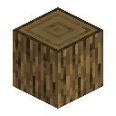
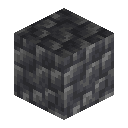
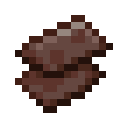
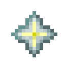
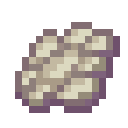
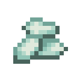

基础配方
基础配方提供鞘翅与海洋之心复制，以及用原木、深板岩圆石等材料制作常用物品。
制作
在工作台按图放入材料，空白格留空。有序配方可整体平移或水平镜像，每格每次消耗一件材料。
表中数量均为单次制作所需。服务端加载世界时启用内置配方，外观通过资源包显示。
箱子
产物：箱子 × 4。

| 材料 | 数量 |
|---|---|
| 任意原版原木标签物品（含去皮原木、木头及菌柄） | 8 |
配方数据
配方标识符：contribution:items/chest_from_logs；产物物品标识符：minecraft:chest。结果组件在继承基底数据后应用。
{
"type": "minecraft:crafting_shaped",
"category": "misc",
"pattern": [
"LLL",
"L L",
"LLL"
],
"key": {
"L": "#minecraft:logs"
},
"result": {
"id": "minecraft:chest",
"count": 4
}
}发射器
产物：发射器 × 1。
| 材料 | 数量 |
|---|---|
| 木棍 | 3 |
| 线 | 3 |
| 投掷器 | 1 |
配方数据
配方标识符：contribution:items/dispenser_from_dropper；产物物品标识符：minecraft:dispenser。结果组件在继承基底数据后应用。
{
"type": "minecraft:crafting_shaped",
"category": "redstone",
"pattern": [
" TS",
"TDS",
" TS"
],
"key": {
"T": "minecraft:stick",
"D": "minecraft:dropper",
"S": "minecraft:string"
},
"result": {
"id": "minecraft:dispenser",
"count": 1
}
}投掷器
产物：投掷器 × 1。

| 材料 | 数量 |
|---|---|
| minecraft:cobbled_deepslate | 7 |
| 红石粉 | 1 |
配方数据
配方标识符：contribution:items/dropper_from_cobbled_deepslate；产物物品标识符：minecraft:dropper。结果组件在继承基底数据后应用。
{
"type": "minecraft:crafting_shaped",
"category": "redstone",
"pattern": [
"CCC",
"C C",
"CRC"
],
"key": {
"C": "minecraft:cobbled_deepslate",
"R": "minecraft:redstone"
},
"result": {
"id": "minecraft:dropper",
"count": 1
}
}鞘翅
产物：鞘翅 × 1。



| 材料 | 数量 |
|---|---|
| 下界合金碎片 | 2 |
| 下界之星 | 1 |
| 幻翼膜 | 4 |
| 鞘翅 | 1 |
制作后得到一件新鞘翅，并返还中心的原鞘翅，共两件，均剩 1 点耐久。原鞘翅保留其他组件，其他材料消耗。
结果属性与组件
{
"minecraft:damage": 431
}配方数据
配方标识符：contribution:items/elytra；产物物品标识符：minecraft:elytra。结果组件在继承基底数据后应用。
{
"type": "minecraft:crafting_shaped",
"category": "equipment",
"group": "contribution:elytra_duplication",
"pattern": [
"N#N",
"PSP",
"P P"
],
"key": {
"N": "minecraft:netherite_scrap",
"#": "minecraft:nether_star",
"P": "minecraft:phantom_membrane",
"S": "minecraft:elytra"
},
"result": {
"id": "minecraft:elytra",
"count": 1,
"components": {
"minecraft:damage": 431
}
}
}海洋之心
产物：海洋之心 × 2。

| 材料 | 数量 |
|---|---|
| 海晶砂粒 | 8 |
| 海洋之心 | 1 |
配方数据
配方标识符：contribution:items/heart_of_the_sea；产物物品标识符：minecraft:heart_of_the_sea。结果组件在继承基底数据后应用。
{
"type": "minecraft:crafting_shaped",
"category": "misc",
"pattern": [
"PPP",
"PHP",
"PPP"
],
"key": {
"P": "minecraft:prismarine_crystals",
"H": "minecraft:heart_of_the_sea"
},
"result": {
"id": "minecraft:heart_of_the_sea",
"count": 2
}
}木棍
产物：木棍 × 16。
| 材料 | 数量 |
|---|---|
| 任意原版原木标签物品（含去皮原木、木头及菌柄） | 2 |
配方数据
配方标识符：contribution:items/sticks_from_logs；产物物品标识符：minecraft:stick。结果组件在继承基底数据后应用。
{
"type": "minecraft:crafting_shaped",
"category": "misc",
"pattern": [
"L",
"L"
],
"key": {
"L": "#minecraft:logs"
},
"result": {
"id": "minecraft:stick",
"count": 16
}
}